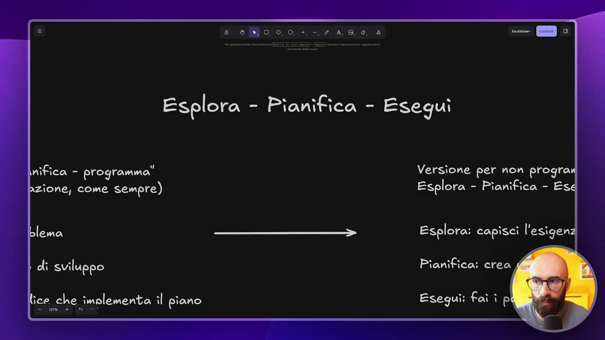
OCR: Esplora - Pianifica - Esegui nifica - programma" Versione per non prograi Azione, come sempre) Esplora - Pianifica - Es lema Esplora: capiscì l'esigenz dî sviluppo Pianifica: crea ice che implementa il piano Eseguì: faî ì p
Vi voglio far vedere un approccio che cambierà completamente il vostro modo di lavorare con Cloud Code che si chiama Esplora, Pianifica e Segui. Anche in questo caso non mi sono inventato niente di particolare. Questa è una struttura, un framework di lavoro che in realtà è suggerito proprio da Antropic stesso nella documentazione. Vi lascio come sempre il link nelle risorse extra per chi volesse approfondire. Quando guardiamo le best practices di Cloud Code c'è questo paragrafo, questa sezione che si chiama proprio così Esplora, Pianifica e Poi Programma, Scrivi il codice. Ricordiamoci ovviamente che Cloud Code originariamente nasce come strumento per il codice ma poi abbiamo scoperto ampiamente, se sei arrivato a questo punto del corso sai che si può usare per tutti i lavori d'ufficio, i lavori creativi e così via. Quindi noi facciamo la stessa cosa, solo che invece di scrivere il codice scrivi il codice a noi e segui quello che devi fare, no? Fai le attività che devi fare. Nella sua versione originale, quindi Esplora, Pianifica, Programma
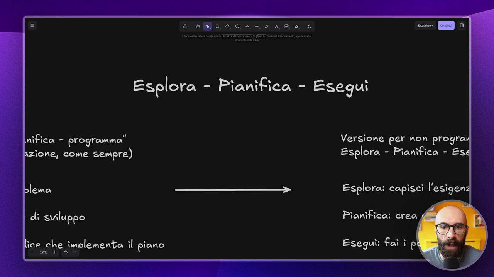
OCR: Esplora - Pianifica - Esegui nifica - programma" Versione per non program Pzione, come sempre) Esplora - Pianifica - Esd_ lema Esplora: capisci l'esigenz di sviluppo Pianifica: crea ice che imolementa il piano Esegui: faî ì p a
che significano questi tre step? Analizza il problema. Quindi invece di metterci subito a fare il task che vogliamo fare ci arriviamo un po' alla volta. Poi, dopo che l'abbiamo analizzato, crea un piano di sviluppo e poi programma, quindi Code, la terza voce, no? Avete visto? Vi ricordate qua era Code, la terza voce, che significa programma? Scrivi il codice. Programma, cioè scrivi il codice che implementa il piano che abbiamo fatto. Quando lo usiamo nel nostro caso è praticamente identico come approccio cambia leggermente ovviamente il significato perché noi andiamo a fare la versione per non programmatori, ok? Come tutto quello che vi ho fatto vedere dentro questo corso. Esplora, Pianifica, Esegui dove esplora significa capisce l'esigenza ma soprattutto esplora il materiale. Quindi avete, che ne so, tanta documentazione che va letta prima di fare un determinato task. Avete molti file di contesto che deve caricare.
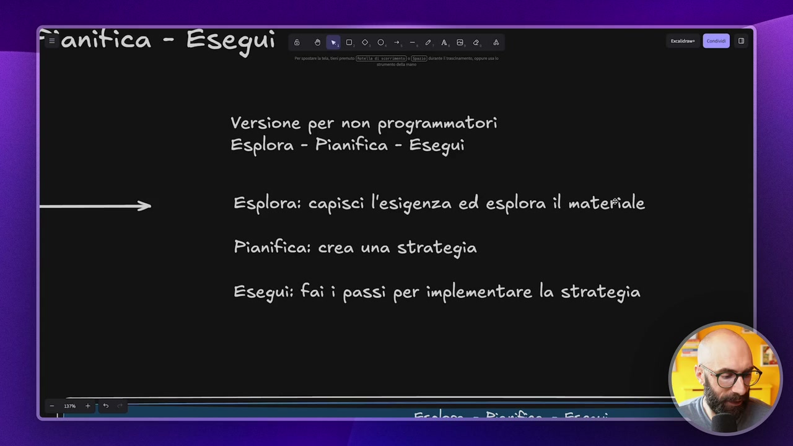
OCR: segui e ao, 0,0, +, -.2,4,8,0, 4 Versione per non programmatori Esplora - Pianifica - Eseguì Esplora: capisci l'esigenza ed esplora il materiale Pianifica: crea una strategia Eseguì: fai ì passi per implementare la strategia
Avete del materiale extra, delle fonti che avete scaricato voi oppure che deve consultare e così via. Poi pianifica, quindi qua crea una vera e propria strategia un piano che deve eseguire e esegui, diciamo, va a eseguire i passi che implementano questa strategia. Quindi passa dalla teoria, sono proprio una serie di passi questo lo vedremo, è proprio fisicamente una sorta di to do list in una parte implementativa vera e propria. Perché facciamo questa cosa? Come sempre, diciamo, prima di metterci a lavorare a vederlo dentro Cloud Code per me è importante farvi capire il perché facciamo la cosa così la comprendete bene e sapete padroneggiarla, no? Quando farla e quando no. Allora, noi facciamo questa cosa per vari motivi innanzitutto perché è evidente di risolvere il problema sbagliato che significa? Significa che quando abbiamo uno strumento così potente come Cloud Code, quindi questi strumenti di tipo agentici e così via, è chiaro che una volta che li facciamo partire
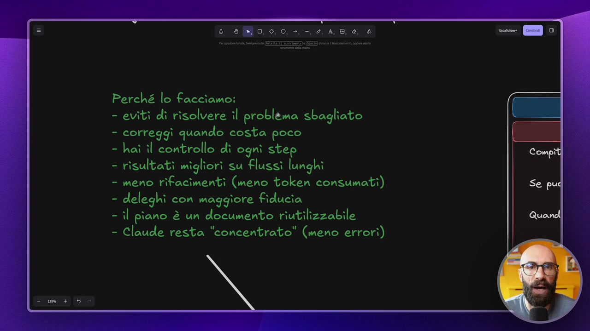
OCR: Perché lo facciamo: - evìtì dì risolvere il problema sbagliato - correggi quando costa poco hai il controllo di ogni step risultati migliorì su Flussi lunghi - meno rifacimenti (meno token consumati) =; deleghi con maggiore fiducia - il piano è un documento riutilizzabile - Claude resta "concentrato" (meno errori)
loro partono e iniziano a lavorare magari ti accorgi dopo un quarto d'ora che sta facendo una cosa sbagliata o che la sta facendo nel modo sbagliato. Correggi quanto costa poco il fatto di separare la fase di pianificazione dalla fase di esecuzione significa che io nel piano dico no, guarda che hai fatto questi 7 punti ma il punto 5 non mi piace lo dobbiamo modificare oppure il punto 6 non serve lo dobbiamo cancellare oppure devi aggiungere un punto 8 perché voglio che fai questa cosa e quindi non quando sta eseguendo e quindi quando potrebbe essere troppo tardi ma quando sta pianificando. Abbiamo il controllo di ogni step perché avendo un piano immaginate che dovete fare una ricetta e avete gli step da seguire voi sapete che ad ogni step potete controllare e quindi quando c'è lo step di sbattere 4 uova se voi in frigo ne avete 0 sapete che dovete procurarvi 4 uova prima di cominciare e se guardate la ricetta prima di cucinare
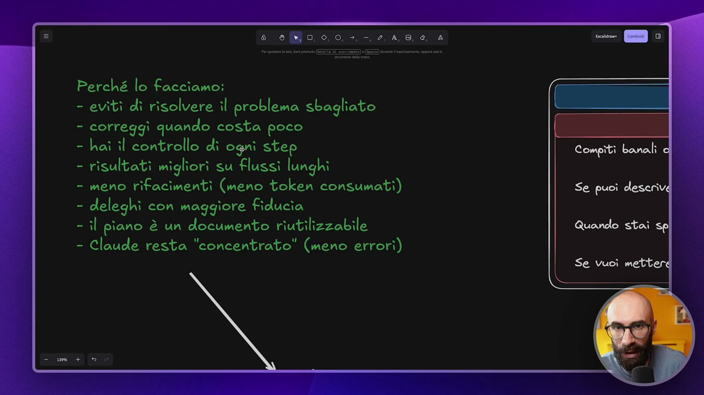
OCR: Perché lo facciamo: - eviti di risolvere il problema sbagliato - correggi quando costa poco - hai il controllo di ogni step Compiti Grad - risultati migliori su Flussi lunghi - meno rifacimenti (meno token consumati) Se puoì descrive - deleghi con maggiore Fiducia - il piano è un documento riutilizzabile Quando stai - Claude resta "concentrato" (meno errorì) Se Vuoì mette
avete il tempo di andare a comprare quelle 4 uova se invece state cucinando sulle 9 di sera è tutto chiuso, è troppo tardi non potete via quelle 4 uova. Risultati migliori su flussi lunghi dipende ovviamente da come lo utilizzate se siete già un po' più smanettoni ma probabilmente arrivati a questo modulo del corso lo siete risultati migliori su flussi lunghi quando fate delle cose che durano tanto e quindi magari dovete lasciarlo lavorare mezz'ora, un'ora in automatico perché sta leggendo file, scrivendo file e così via la differenza è abissale la differenza è proprio abissale meno rifacimenti che per me significa che consumiamo poco o meno e sappiamo che ovviamente il costo dei token è un tema importante siccome noi abbiamo fatto il piano ovviamente fare un piano costa però è un piccolo investimento di quello che risparmiamo dopo perché qua se lavoravamo in maniera tradizionale magari se lui sbaglia dobbiamo ricominciare da capo e consumiamo ricominciare da capo e consumiamo invece con il piano siamo molto più tranquilli
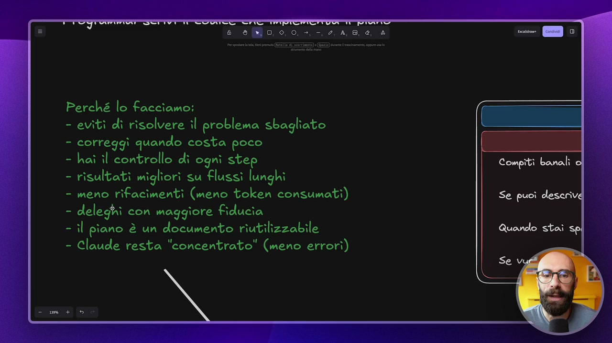
OCR: Perché lo Facciamo: evitì dì risolvere il problema sbagliato correggi quando costa poco hai il controllo dî ogni step risultati migliori su Flussi lunghi meno rifacimenti (meno token consumati) Se puoi deserivd deleghi con maggiore fiducia il piano è un documento riutilizzabile - Claude resta "concentrato" (meno errori)
deleghi con maggiore fiducia questa è un po' una conseguenza diciamo di una cosa che ho notato io nel tempo facendolo lavorare con i piani sono molto più tranquillo a dire se si va nella prossima ora non mi chiedere il permesso perché tanto ci siamo guardati insieme il piano immaginate proprio che c'è uno stagista nuovo nel vostro team in ufficio una persona magari junior, no? Quindi ovviamente dovete fare tanta supervisione però prima di dargli un task molto lungo avete fatto insieme un piano allora gli dici guarda Marco, perfetto questi sono i 5 step io mi aspetto che tra un'ora mi consegni che ne so, questa presentazione, queste slide siete molto più tranquilli perché sapete che quei 5 step li avete costruiti insieme e li avete rivisti insieme poi il piano è un documento riutilizzabile questo lo vediamo tra un attimo può essere un motivo per alcuni un vantaggio, per altri no però per me è una cosa interessante e poi diciamo questo è un po' collegato al fatto di risultati migliori su flussi lunghi Claude resta più concentrato
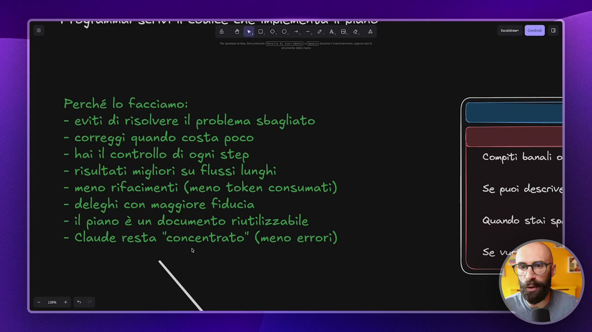
OCR: Perché lo Facciamo: evitì di risolvere il problema sbagliato correggi quando costa poco hai îl controllo di ogni step risultati migliori su Flussì lunghi meno rifacimenti (meno token consumati) deleghi con maggiore fiducia il piano è un documento riutilizzabile - Claude resta "concentrato" (meno errori) è
qua l'ho messo tra virgolette intendo dire che avendo un piano da seguire quando devo lavorare su cose molto lunghe sapendo in dettaglio cosa deve fare ad ogni step anche se è passato tanto tra lo step 1 e lo step 7 lui ci ha scritto precisamente guarda che lo step 7 devi fare questa cosa qua devi andare a prendere il risultato che ti è uscito nello step 1 mischiarlo con quello che hai fatto nello step 3 e così via cioè lo prendiamo e lo portiamo proprio per mano ok? Resta più concentrato tra virgolette vi faccio anche diciamo il solito confronto per dire quando lo dovete utilizzare e quando no poi non vi preoccupate perché questo schema ovviamente lo potete scaricare come sempre nelle risorse extra del corso ci sono dei casi in cui non vale la pena fare questa cosa ovviamente come tutte le cose che vi sto facendo vedere non è che sono sempre così dovete lavorare e così via tipo compiti banali piccole modifiche assolutamente non vi mettete a pianificare se è solo cambiami il nome di questo file
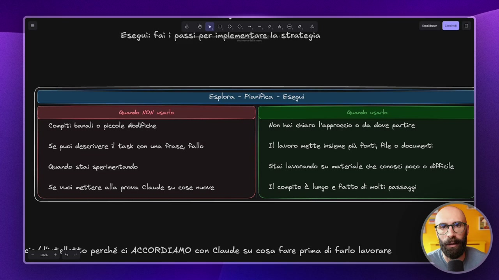
OCR: e elo 0 0, +, -. 2, 4,8, 6, è Eseguî: faì î passi. per.implementare.la strategia Esplora - Pianifica - Esegui Compiti banali o piccole stoctifiche Non hai chiaro l'approccio o da dove partire Se puoi descrivere il task con una frase, fallo Il lavoro mette insieme più fonti, file o documenti Quando stai sperimentando Stai lavorando su materiale che conoscì poco o difficile Se vuoi mettere alla prova Claude su cose nuove Il compito è lungo e fatto di molti passaggi i so ddl rell-+to perché ci ACCORDIAMO con Claude su cosa fare prima di farlo lavorare os +
fammi un attimo una ricerca al volo su internet no quei prompt proprio di diciamo di cose al volo che facevate prima oppure dammi due idee per fare che ne so un video non vi mettete a pianificare in quel caso poi tutti i casi questo è diciamo il modo proprio facile per capire se serve pianificare o meno se il task che sta per fare lo puoi descrivere con una sola frase non serve un piano probabilmente quindi se mi servono tre idee per un nuovo video youtube non vi mettete a fare pianificazione ok scrivete la richiesta e basta quando state sperimentando per esempio io a volte sto facendo delle prove di cose e la non voglio pianificare la voglio proprio vedere come reagisce Claude allora non mi metto a pianificare oppure se vuoi mettere alla prova Claude su cose nuove quindi se avete un task che non avete mai fatto prima volete farlo magari piccolino che ne so state facendo se avete un un grosso pdf da 100 pagine e lo dovete dividere in tanti pdf da una pagina
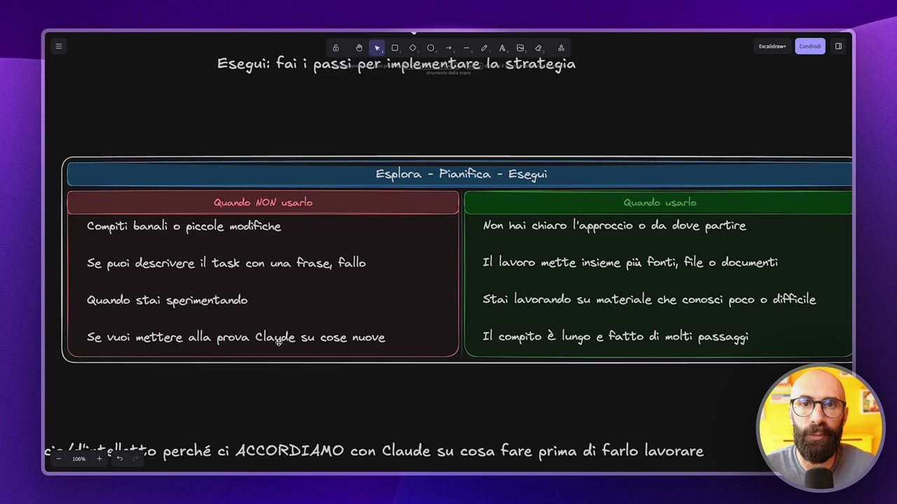
OCR: e eo, 0,0, >, -,2, 4,8, 6, è Eseguì: faì î passi.per.implementarela strategia Esplora - Pianifica - Esegui Quando NON usarlo | Quondo usarlo Compiti banali o piccole modifiche Non hai chiaro l'approccio o da dove partire Se puoi descrivere il task con una frase, fallo Il lavoro mette insieme più Fonti, file o documenti Quando stai sperimentando Stai lavorando su materiale che conoscì poco o difficile Se vuoì mettere alla prova Clayde su cose nuove Il compito è lungo e fatto di molti passaggi i — vo ddh.rell.+to perché ci ACCORDIAMO con Claude su cosa fare prima di farlo lavorare
questa cosa la volete testare la prima volta lo fate senza pianificare vedete se funziona se vi torna tutto poi dopo invece quando lo fate su un archivio di 1000 pdf dite ok ora però mi faccio un piano perché per farlo su 1000 pdf questo deve lavorare un'ora e mezza senza il mio intervento ok e quindi conseguenza quando usarlo quando non è chiaro l'approccio o da dove partire lo sviluppo a Claude e voi lo supervisionate quindi ci potrebbe essere un caso dove voi non sapete ancora una cosa tecnicamente come la farà Claude e magari avrà bisogno di installare qualcosa no l'abbiamo visto nel modulo sul installare le app avrà bisogno di scrivere del codice e così via in quel caso è fondamentale avere un piano perché Claude vi spiega allora guarda che per ottenere questa cosa che tu mi hai chiesto io dovrò fare questo poi dovrò fare questo e così via oppure state creando una skill una skill molto complessa volete farvi un piano di come sarà quella skill quello è uno dei casi
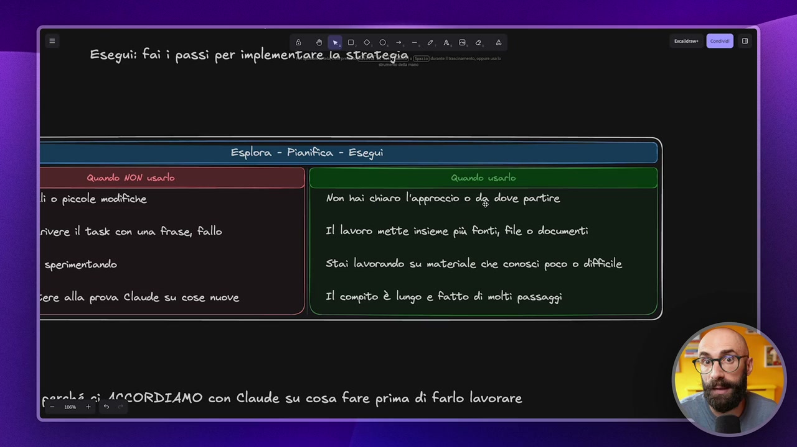
OCR: e ao, 0,0. +, -. 2, 4,8, 6, è Esegui: faì ì passì per ìmplementare..ia strategia... _ Quando usero Non hai chiaro l'approccio o da dove partire Il lavoro mette insieme più Fonti, file o documenti Stai lavorando su materiale che conosci poco o difficile Il compito è lungo e fatto di molti passaggi xa (ASTI ACCORDIAMO con Claude su cosa fare prima di farlo lavorare
nei quali farlo semplice tutti i casi in cui ci sono grosse modifiche al workspace vi consiglio sempre sempre sempre sempre di pianificare poi il lavoro mette insieme più fonti file o documenti come dicevo prima dovete fare un report e in questo report deve andare a leggere della roba da internet della roba di file pdf che avete scaricato voi della roba di file md che sono già presenti nel workspace quindi deve combinare tante cose la il piano è fondamentale oppure ancora state lavorando su materiale che conosci poco o difficile quindi magari fate quella cosa su un materiale che non avete prodotto voi oppure quello è molto utile pianificare così capite lui cosa andrà a leggere quale quale starà pigliando come lo utilizzerà e così via e poi in generale tutti i compiti lunghi i compiti fatti di molti passaggi questo per me è fondamentale perché io voglio sapere i passaggi che lui farà soprattutto se questi passaggi richiedono
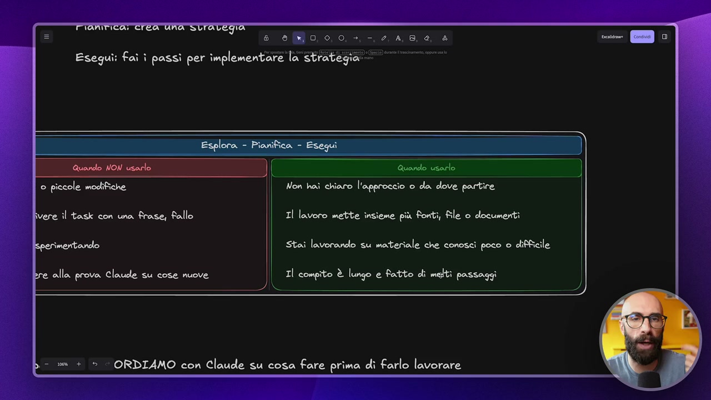
OCR: 8 eo, 0,0. +, -, 0, 4,8, 0 è Esegui: faì ì passi per ìmplementare la strategia GEEE © piccole modifiche Non hai chiaro l'approccio o da dove partire ivere il task con una frase, Fallo Il lavoro mette insieme più Fonti, file o documenti imentando Stai lavorando su materiale che conosci poco o difficile alla prova Clauee su cose nuove Il compito è lungo e fatto di melti passaggi ORDIAMO con Claude su cosa fare prima di farlo lavorare
scrivere del codice e diciamo fare della installare delle app io voglio saperlo voglio dire ok si tu scrivi del codice python fammi vedere che stai facendo oppure vuoi installare un app ma quest'app a che serve no lo voglio per motivi di sicurezza ma anche per avere chiaro quello che sta per succedere e qua diciamo un po' riassunto tutto per diciamo per per togliere noi facciamo questa roba qua usiamo l'approccio che diciamo che le best practice consigliano nel mondo della programmazione lo portiamo nel nostro lavoro non di programmatore fondamentalmente perché stiamo facendo un accordo con Claude prima di farlo lavorare questo è il senso e all'inizio lo so perché è successo pure a me vi sembrerà che state perdendo tempo state dicendo madonna mia ma io per fare sta cosa del botta e risposta col piano so 5 minuti che ci sto lavorando in realtà quello che stiamo facendo è un investimento per un secondo momento sia di tempo sia di token se ci pensate
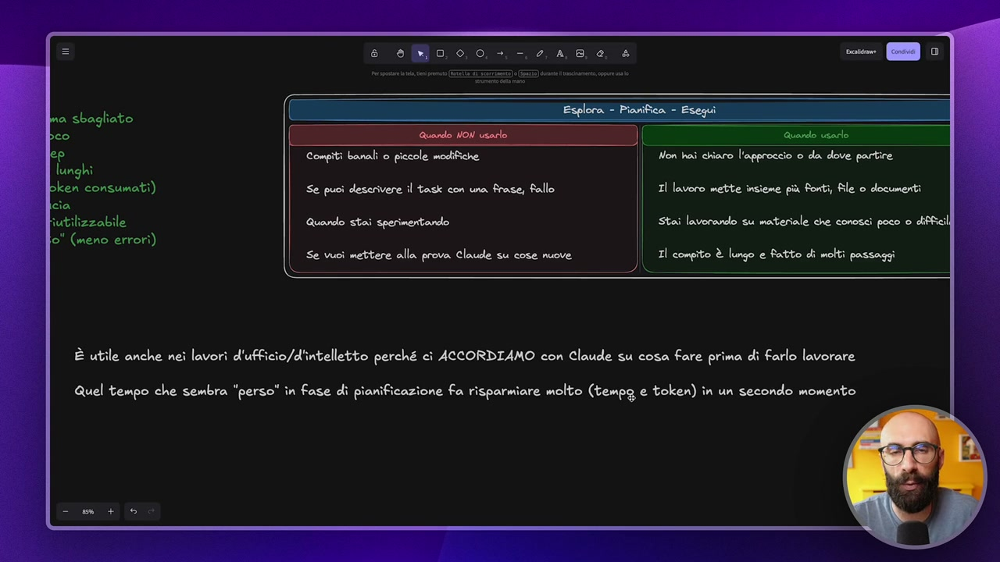
OCR: — © 0 Compiti banali 0 piccole modifiche Non hai chiaro l'approccio o da dove partire Se puoi descrivere il task con una frase, fallo Il lavoro mette insieme più Fonti, file o documenti Quondo stai sperimentando Stai lavorando su materiale che conoscì poco o difficili lo" (meno errori) Se vuoi mettere alla prova Claude su cose nuove Il compito è lungo e fatto di molti passaggi S È utile anche nei lavori d'ufficio/d'intelletto perché ci ACCORDIAMO con Claude su cosa fare prima di farlo lavorare Quel tempo che sembra “perso" in fase di pianificazione fa risparmiare molto (tempo e token) în un secondo momento
questo succede pure normalmente con esseri umani spesso vi faccio questo parallelismo con gli esseri umani è chiaro che fare la strategia sembra una perdita di tempo ma la strategia è quella che dopo non ci fa perdere tempo quindi investiamo quel tempo iniziale per buttare giù un piano per fare anche una semplice to do list per farci un piccolo schemino quando lo facciamo con carta e penna nel nostro lavoro quotidiano e sappiamo che quella cosa poi ci è da guida in quello che faremo dopo ecco perché è un investimento lo stiamo perdendo tempo e adesso vediamo come lo facciamo praticamente